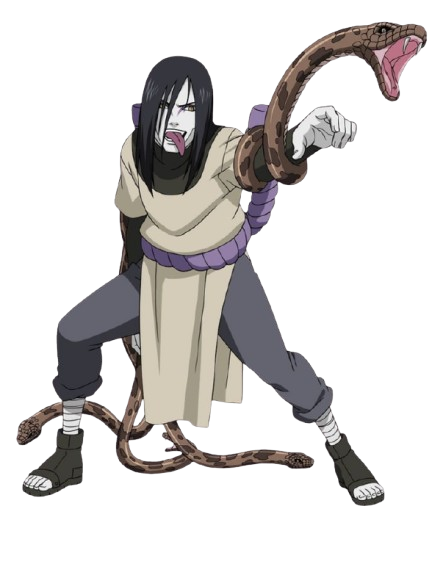
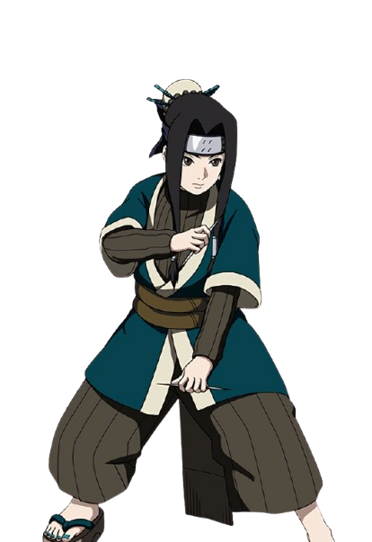

Orochimaru (大蛇丸)
Orochimaru é um dos lendários Sannin de Konoha, conhecido por sua obsessão por poder e pela
imortalidade. Ele é um mestre das artes ninjas proibidas e tem uma personalidade manipuladora e
cruel. Sua busca incessante pela perfeição o levou a abandonar sua vila e realizar experimentos
sombrios para alcançar seus objetivos.

Kabuto Yakushi (薬師カブト)
Kabuto é um ninja altamente inteligente e habilidoso que atua como braço direito de Orochimaru.
Inicialmente servindo como espião, ele se destaca por seu vasto conhecimento em medicina e
habilidades de espionagem. Apesar de sua aparente lealdade, Kabuto tem suas próprias ambições e se
transforma em uma ameaça perigosa.

Haku (白)
Haku é um ninja órfão de Kirigakure, leal a Zabuza. Apesar de sua aparência delicada e natureza
gentil, ele é um combatente formidável, utilizando a técnica Kekkei Genkai de manipulação de gelo.
Sua dedicação inabalável a Zabuza é um reflexo de seu desejo de ser útil a quem ele considera sua
família.
Zabuza Momochi (桃地再不斬)
Zabuza é um ex-membro dos Sete Espadachins da Névoa Oculta, conhecido como "O Demônio da Névoa
Oculta". Ele é um ninja implacável e ambicioso, famoso por sua força e maestria com a espada. Apesar
de sua brutalidade, Zabuza demonstra uma profunda ligação emocional com Haku, revelando seu lado
mais humano.